ASOCIATIA NATIONALA A SALVATORILOR MONTANI DIN ROMANIA
PROCEDURI ȘI TEHNICI DE BAZĂ ÎN SALVAREA MONTANĂ
Materiale pentru asigurări
Caracteristici tehnici
1.Coardă dinamică
Coarda dinamică este folosită pentru asigurarea în deplasare a unei formaţii. Corzile dinamice simple omologate de către UIAA au diametrul exterior cuprins între 10 –11,5 mm., o greutate de 65 –85 g / mL. şi lungimi cuprinse între 40 şi 60 mL.
Caracteristici dinamice:
- rezistenţă statică: - 2750 daN.
- rezistenţă statică la nod: - 1850 daN.
alungire: - 33 – 34%
•număr de căderi:
- 80 kg. - 6 (norma UIAA Factor 2)
- 90 kg. - 5
- 65 kg. - 8
- 55 kg. - 10
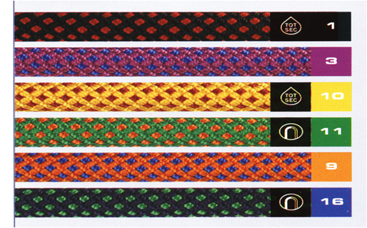
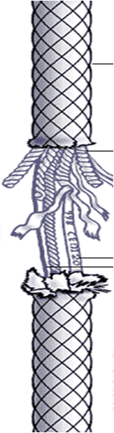
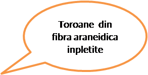
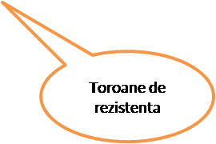
Semicoardă dinamică
Este o coardă dinamică calculată şi testată pentru o sarcină de 55 kgF. Semicorzile dinamice omologate de către UIAA au diametrul cuprins între 8 – 9,5 mm., o greutate de 46 – 55 g /mL. şi lungimea cuprinsă între 45 – 90 mL.
Caracteristici dinamice:
•rezistenţă dinamică – 816 kg.F
•rezistenţă statică la nod – 1200 daN.
•alungire – 10%
Această categorie de corzi poate fi folosită pentru ture de iarnă în escalade, în simplu sau în dublu.
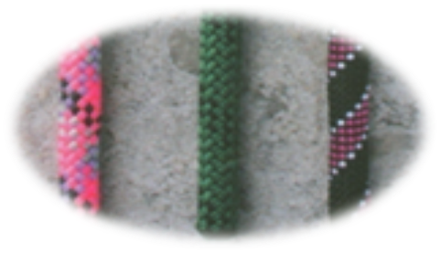
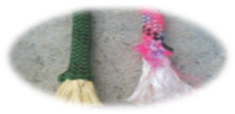
DYNEEMA (fibra poliester)
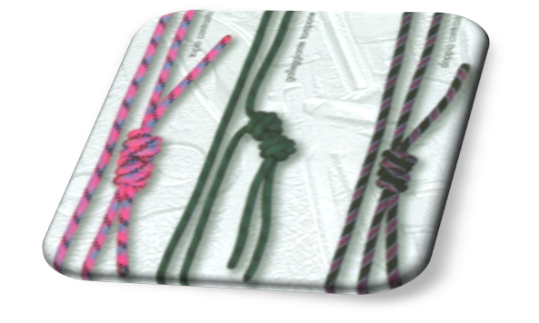
Coarda Statica
Are rolul de a rezista la solicitari exclusiv statice si au o mare utilizare, corzile statice au o manta de protectie mai groasa si mai rezistenta decat a corzilor dinamice, trebuie sa suporte uzuri prin frecare. Corzile statice sunt frecvent utilizate pentru balustrade tiroliene si salvari din cladiri, viituri poduri suspendate. In general se folosesc acolo unde alungirea corzii deranjeaza, nu se folosec la ascensiuni

(Corzile care au codul TOT SEC sunt pe codul universal de folosire pentru toate tipurile de salvare. )
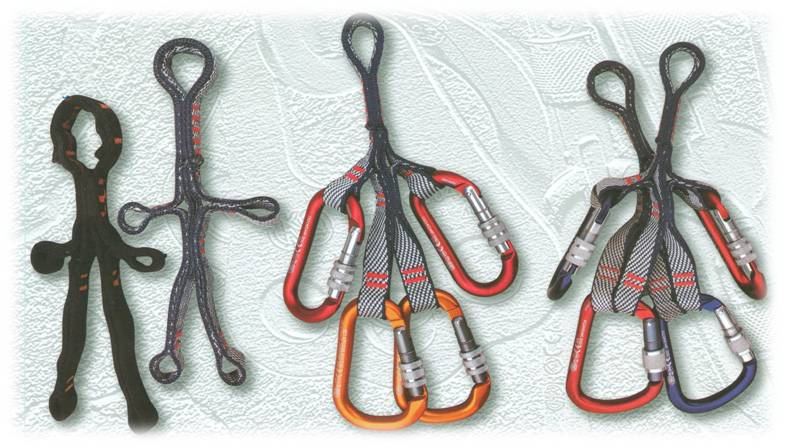
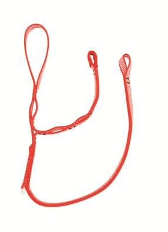
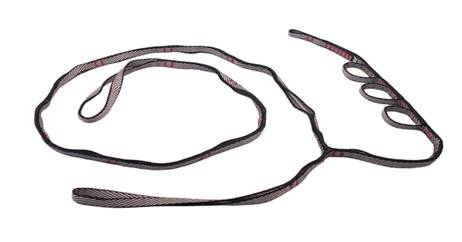
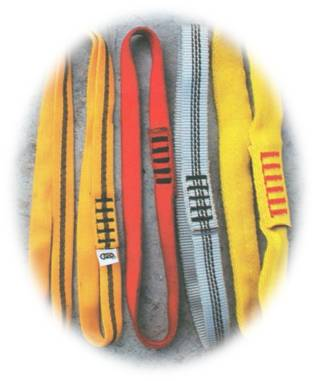
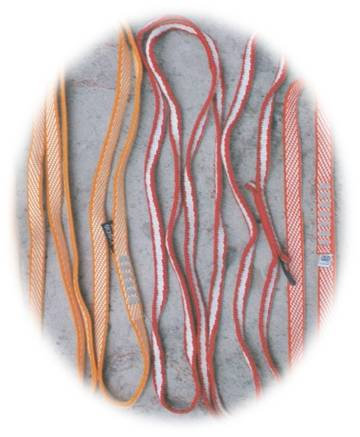
Dispozitive repartitoare si echiparea lor in ateliere de salvare


Repartitoarele au rolul de a dispune la o distanta egala carabinierele in sistemul de salvare cat si realizarea cu ajutorul lor a buclei salvatorului echipat in sistem de elevare 3x3
FORMA DE ECHIPARE A PAULUI
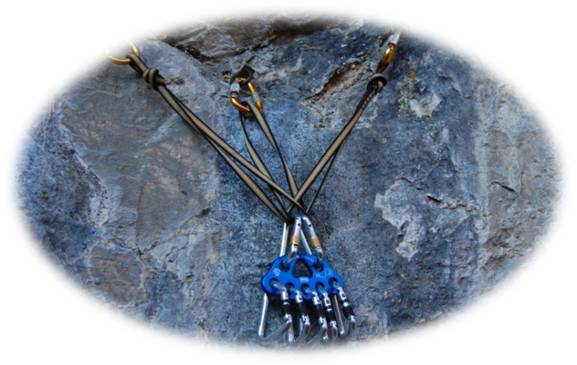
carabiniere
Acest dispozitiv face legatura intre coarda si un dispozitiv fix de asigurare. In actiuni de salvare se folosesc mai multe tipuri de carabiniere.
1.carabiniera de aluminiu cu siguranta
2.carabiniera de otel cu siguranta
In lantul de securitate care leaga salvatorul de asigurant, unul dintre ochiurile care necesita cea mai mare atentie, este carabiniera. Utilizarea ei necesita o mare vigilenta.
Nimic nu trebuie sa incomodeze, orce presiune din exterior ii reduce rezistenta. In plus carabiniera trebuie plasata pe lungime,orice alta pozitie ii reduce rezistenta.

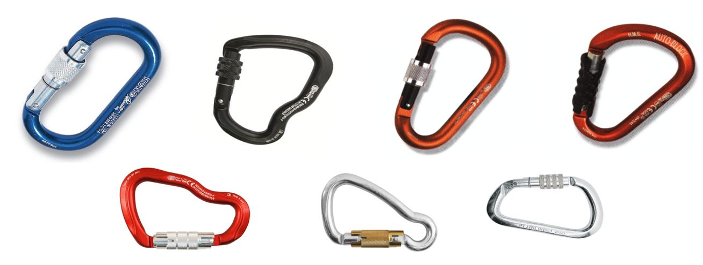
Aceste carabiniere sunt recomandate în operaţiunile de salvare în care se folosesc greutăţi foarte mari, deoarece rezistă până la 3500 kgF
Carabineră „Expres”

Ce trebuie ştiut despre folosirea carabinierelor, în general
În lanţul de securitate care leagă alpinistul de asigurant, unul dintre ochiurile care necesită cea mai mare atenţie, este carabiniera.
Deşi majoritatea alpiniştilor îi acordă o încredere oarbă, utilizarea ei necesită o mare vigilenţă, chiar şi pentru gesturile cele mai simple.
Cum se plasează coarda în carabinieră ?
Pentru alpinistul debutant, plasarea corzii este o operaţie delicată. El trebuie să fie stăpân pe gesturile sale, mai ales atunci când înălţimea eventualei căderi este maximă (mare).
În funcţie de mâna disponibilă şi de sensul în care este plasată carabiniera, sunt indicate două tehnici:
1 - menţinerea carabinierei cu degetul mijlociu şi trecerea corzii cu degetul mare şi cu arătătorul
2 - menţinerea carabinierei cu degetul mare şi trecerea corzii cu degetul mijlociu şi cu arătătorul


Există un fenomen foarte alarmant: auto-desprinderea. Dacă o cădere violentă survine, coarda efectuează o mişcare foarte rapidă (ca o biciuire) care poate provoca o desprindere a corzii (fig a).

În caz de trecere inversă, de deasupra spre dedesubt, carabiniera riscă să se întoarcă, să se răsucească şi să faciliteze ieşirea corzii din carabinieră.
Dacă înaintarea escaladei se derulează pe diagonală, clapa carabinierei trebuie plasată în direcţia opusă înaintării alpinistului (fig. e).
Acest risc foarte grav este unul din motivele importante care duc la recomandarea unei atenţii sporite plasării corzii în carabinieră. Coarda trebuie să treacă de dedesubt înspre deasupra (fig. d).

De fapt, dacă clapa este plasată în aceeaşi direcţie cu cea a căţărătorului, în momentul căderii apare din nou riscul desprinderii.
Odată coarda bine plasată în carabinieră este foarte important să fii conştient de rezistenţa maximă a carabinierei, influenţată de următorii doi factori:
1) Plasarea carabinierei.
Nimic nu trebuie să o incomodeze, orice presiune din exterior îi reduce rezistenţa (fig. f). În plus, carabiniera trebuie plasată pe lungime; orice altă poziţie îi reduce rezistenţa (fig. g).


2) Clapa carabinierei (carabiniera are rezistenţă maximă când clapa este închisă)
Contrar aşteptării, clapa carabinierei nu rămâne închisă tot timpul. Deschiderea clapei carabinierei poate fi provocată de trei elemente:
•Un şoc contra unei stânci ascuţite.
Inerţia clapei provoacă deschiderea completă a carabinierei în momentul în care se produce şocul (fig. h).
•Relieful stâncos împinge clapa carabinierei.
Acest caz poate fi evitat dacă alpinistul foloseşte lungimea potrivită (fig. i)
•În cursul unei căderi, coarda alunecând foarte rapid în carabinieră, se pot crea vibraţii capabile să antreneze deschiderea clapei (fig. j). Dacă un şoc violent se produce în momentul în care clapa este deschisă, riscul ruperii carabinierei nu este deloc de neglijat. Alpiniştii nu trebuie să neglijeze aceste pericole. Pentru a-i ajuta, Petzl a creat carabiniera Spirit.

Pitoane
Pitonul reprezintă ultimul element al lanţului de asigurare, având rolul de a fixa toate celelalte elemente de perete.
•Piton clasic
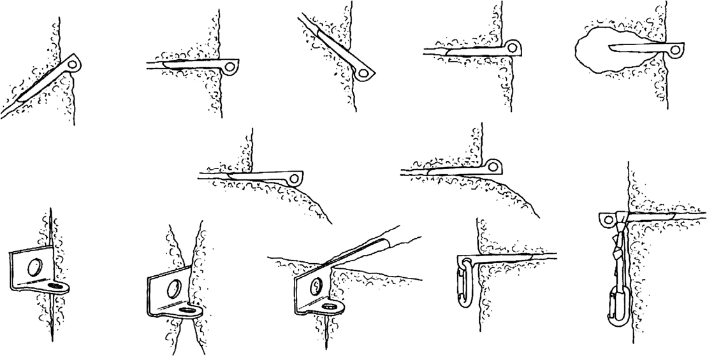
Poziţia 1 – corect
Poziţia 2 – corect
Poziţia 3 – de trecere
Poziţia 4 – corect
Poziţia 5 – de trecere
Poziţia 6 – incorect
Poziţia 7 – corect
Poziţia 8 – corect
Poziţia 9 – incorect
Poziţia 10 – incorect
Poziţia 11 – corect
Poziţia 12 – corect
Poziţia 13 – incorect
Poziţia 14 – corect
Pitonul de expansiune
Pitoanele de expansiune sunt folosite la asigurarea salvatorului montan, în deplasarea pe stâncă, prezentând o siguranţă foarte mare. Spre deosebire de pitoanele folosite în mod curent, acestea se folosesc acolo unde nu există fisuri. Locul de fixare al acestor pitoane se face cu bormaşină cu percuţie sau cu dălţi speciale.
Pentru fixarea corectă a pitonului de expansiune, acesta trebuie să fie ales în aşa fel încât să intre până la ureche, în gaura executată (fig.21).
În cazul în care urechea pitonului nu poate fi folosită, se poate fixa o buclă de cablu (fig.22, ).

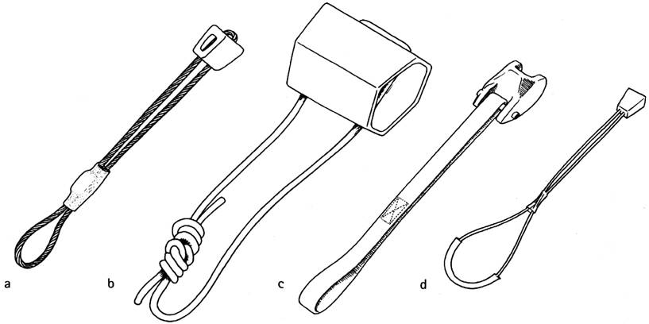
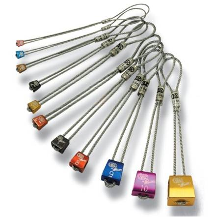
Tendoarele sunt dispozitive de fixare care se folosesc în fisuri cu deschidere mai mare. În general, sunt reglabile.
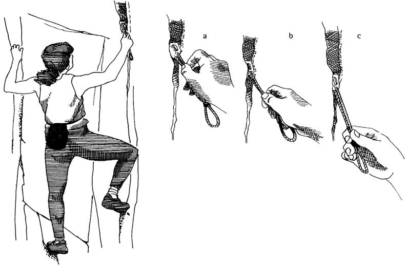
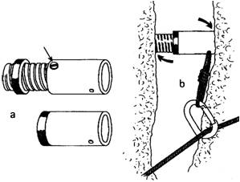
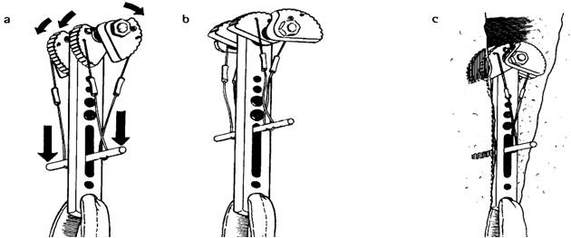
a.Introducerea
b.Fixarea
c.Proba de fixare
Tendor autoreglabil
Scăriţe
Se folosesc la depăşirea obstacolelor surplombate sau expuse.
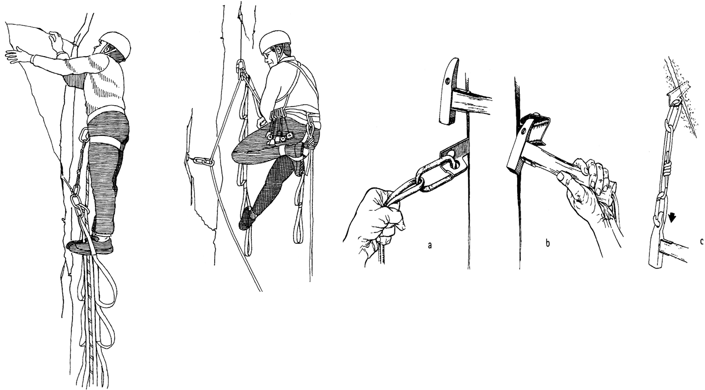
1.Cască
Casca face parte din echipamentul de protecţie al salvatorului montan. Aceasta trebuie să fie bine fixată pe cap şi în poziţie corectă. Casca trebuie să corespundă normelor UIAA sau DIN 7948.
Casca este un obiect foarte important în practicarea alpinismului, rolul ei fiind de a absorbi maxim de energie, deformându-se până la rupere, cu respectarea valorilor de şoc impuse prin normele UIAA. Numeroase accidente s-au produs datorită pietrelor prăvălite din zonele superioare ale traseelor iar altele se produc prin lovirea capului de stâncă în timpul căderii necontrolate (ruperea unei prize, ieşirea pitonului, etc.)
În prezent ne stau la dispoziţie modele omologate cu greutatea între 250 şi 500 g, cu o bună ventilaţie, poziţionate stabil pe cap, cu chingi de legătură sub bărbie şi la ceafă.
Absenţa căştii predomină în escalada sportivă, deoarece în majoritatea cazurilor orientarea peretelui este verticală sau surplombantă şi riscul de a "încasa" pietre este EXCLUS.
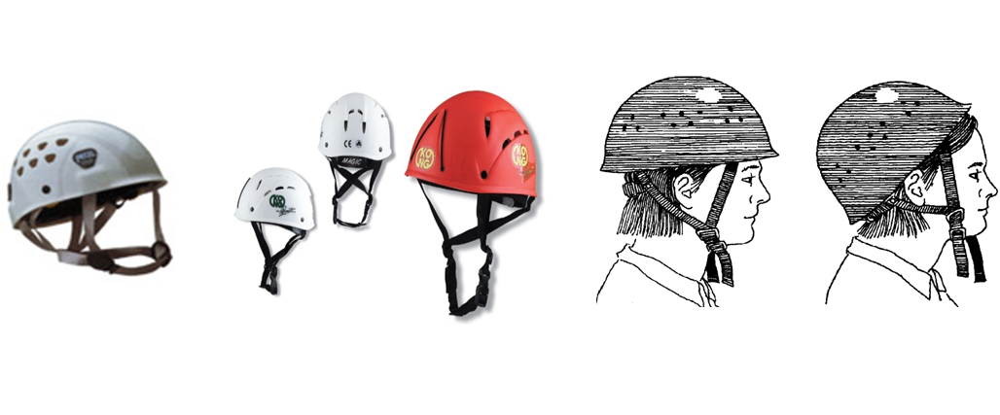